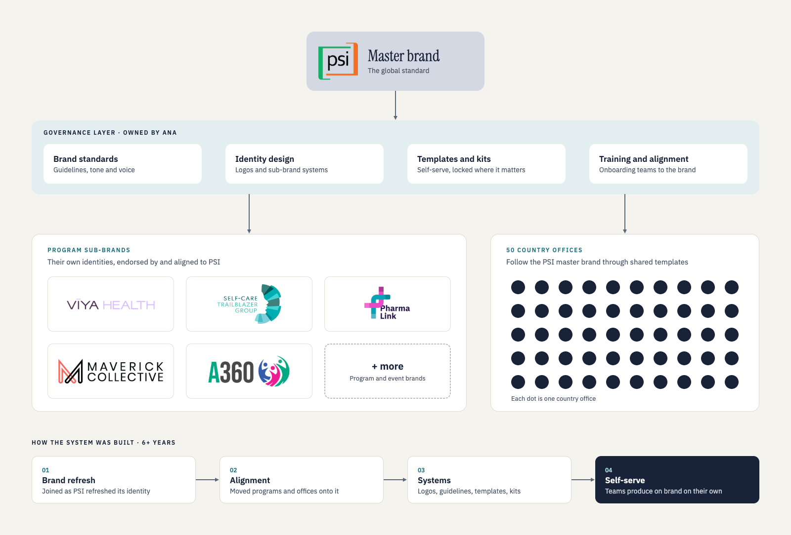
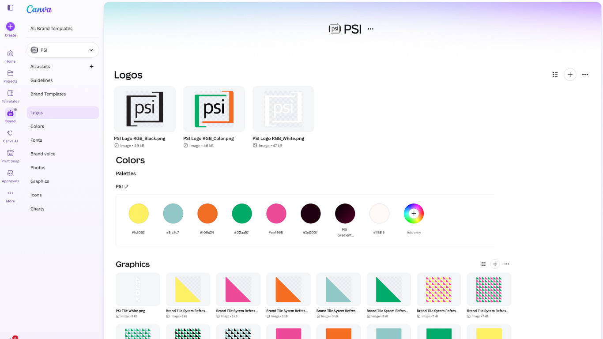
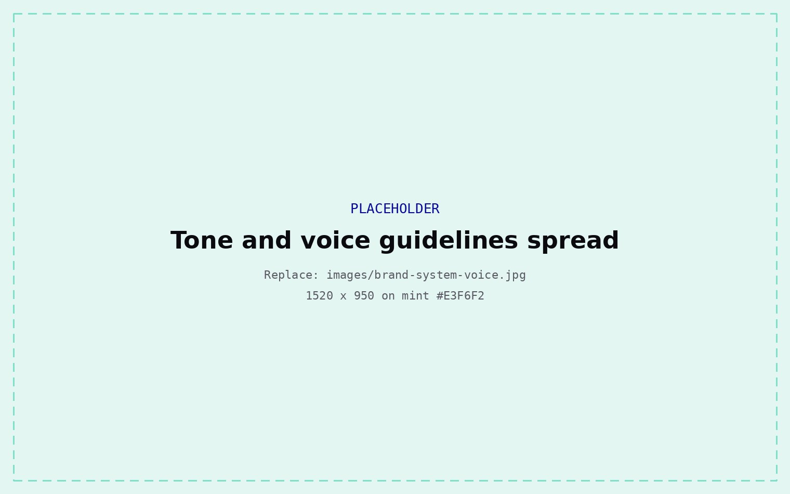
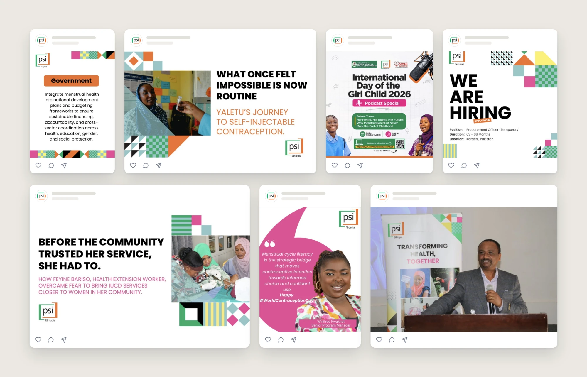
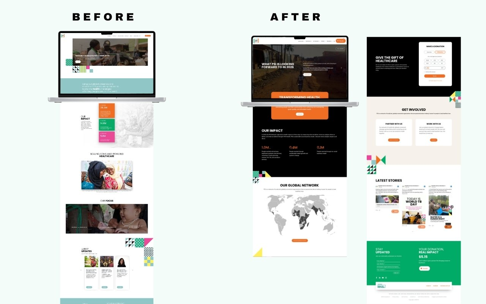

The challenge
PSI is not one brand. It is a network: a global parent brand, program brands with their own identities like A360, Maverick Collective and Viya, and country teams across 40+ countries. Those teams make most of their own materials, usually without a designer.
When I joined, the brand was being refreshed. The guidelines lived in a PDF that people had to remember to open. Logos drifted, colors got approximated, and anything that needed to look official came to a small central team, which turned it into a bottleneck.

The approach
I treated the brand like a product: something with a structure, access rules, documentation and users who need onboarding.
Architecture
Every brand in the network has its own kit: logos, colors, typefaces, photography and graphic elements. Logos, color values and typefaces are locked, because those are what break a brand when they drift. Layout, imagery and message stay open, so a campaign in Kenya and one in Cambodia can each feel local.

Enablement
A system nobody knows how to use doesn't exist. I trained about 78 people across headquarters, regional teams and country offices, most of them not designers. I built Canva templates for the formats teams use most, and led adoption of the brand standards and tone and voice guidelines, so the brand sounds the same in every country, not just looks the same.

Outcome
Most of the network now produces on-brand social media and printed materials on its own. The central creative team spends its time on new work instead of corrections.


Q&A
How do you decide what to lock and what to leave open?
I lock what makes the brand recognizable: logos, color values and typefaces. Layout, imagery and message stay open, because a family planning campaign in Kenya and a malaria program in Cambodia shouldn't look the same. If a system leaves no room to be local, teams quietly stop using it.
How do you get a whole network to adopt a brand?
Training first, templates second. I ran sessions with teams across the network and watched where they got stuck. Those moments told me which templates to build, and they were often not the ones I expected.
What happens when a program wants its own brand?
First I ask whether it needs one. A program that has to stand on its own with funders and partners gets its own identity, endorsed by PSI. One that doesn't stays under the master brand. Either way, it gets a kit and guidelines, so it's governed like everything else.
How do you know it's working?
When I look across the network's social media and printed materials, it reads as one family, and most of it was made without anyone from my team. The creative team delivers 200+ projects a year without brand review slowing anything down.